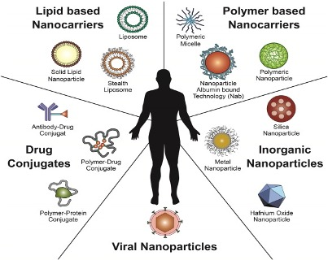
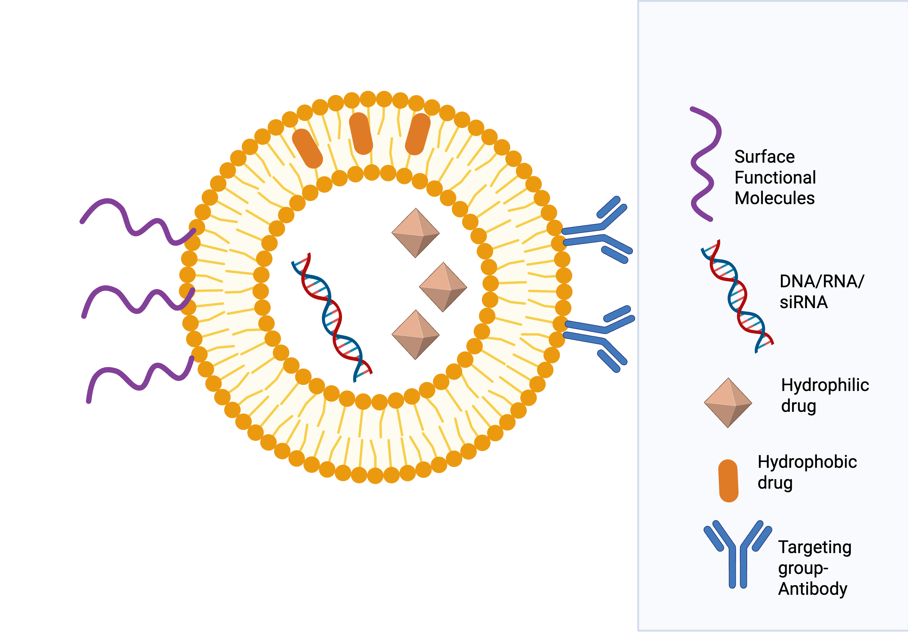

18. Nanomedicine#
Nature builds nanoscale machines using proteins, DNA, lipids
Nanomedicine mimics these natural systems
Combining physics + biology leads to smarter medical technologies
🧠 Nature has done 3 billion years of R&D — we’re just catching up.
18.1 What Is Nanomedicine?#
Application of nanotechnology in medicine for:
Prevention
Diagnosis
Treatment of diseases
Interdisciplinary field combining:
Physics, Biology, Chemistry, Engineering
Mathematics, Computer Science, Medicine
18.1.1 Emerging Fields:#
Nanotherapeutics
Molecularly targeted medicine
Immunotherapy
Synthetic biology
Lab-on-chip systems
Pre-clinical testing of nanoparticles
Genetic and tissue engineering
18.1.2 Why Use Nanoparticles in Medicine?#
Size: 1–100 nm (same scale as biomolecules)
Small enough to:
Interact with proteins, DNA
Enter cells and tissues
Used for:
Drug delivery
Imaging
Diagnostics
18.2 Types of Medical Nanoparticles#
 Figure 18.1 The types of nanoparticles.
18.2.1 Lipid-Based Nanoparticles – Liposomes#
18.2.1.1 What are Lipids?#
Large molecules made from fatty acids
Phospholipids:
Two fatty acid tails + glycerol + phosphate group
Amphiphilic:
Hydrophilic head (water-attracting)
Hydrophobic tail (water-repelling)
Self-assemble into bilayers in water
18.2.1.2 Liposomes#
 Figure 18.2 A cartoon of a liposome based drug carrier.
Spherical vesicles with an aqueous core surrounded by phospholipid bilayers
Biocompatible → safe for medical use
Common in medicine:
Doxil®
DaunoXome®
Ambisome®
18.2.1.3 Drug Loading:#
Hydrophilic drugs → aqueous core
Hydrophobic drugs → lipid bilayer
📘 Analogy: Like soap bubbles carrying medicine, liposomes can deliver drugs safely into cells.
18.3 Common Nanoparticle Types:#
Lipid-based nanoparticles (e.g., liposomes)
Polymer-based nanoparticles and polymer therapeutics
Inorganic nanoparticles, such as metal-coated nanoshells
18.3.1 Polymeric Nanoparticles#
18.3.1.1 What Are Polymers?#
Polymers are long molecules made up of repeated units (monomers).
Can mimic natural biological macromolecules like proteins, antibodies, and DNA.
Can be engineered to elicit specific biological responses.
18.3.1.2 Advantages of Polymeric Nanoparticles#
Biodegradable: Break down naturally in the body.
Stimuli-responsive: Can release drugs in response to pH, temperature, etc.
Targeted delivery: Surface can be modified to attach to specific cells (e.g., cancer cells).
Tunable properties: Adjust molecular weight, hydrophobicity, etc.
18.3.1.3 Amphiphilic Polymers and Micelles#
Amphiphilic polymers have both hydrophilic and hydrophobic segments.
In water, they self-assemble into micelles:
Hydrophobic core (traps hydrophobic drugs)
Hydrophilic shell (interacts with the surrounding fluid)
Used for drug delivery as core-shell nanoparticles
💡 These micelles are like soap bubbles carrying fat-soluble drugs in a water-based bloodstream.
18.3.1.4 Polymer Therapeutics#
Instead of loading drugs inside a nanoparticle, drugs are chemically linked (conjugated) to the polymer.
Improves properties like:
Serum half-life (how long a drug stays in the bloodstream)
Solubility
Targeting
18.3.1.5 Examples:#
PEGylated interferon for Hepatitis C
Poly(ethylene glycol) (PEG) attached to protein drug
Glycopolymer-conjugated insulin
18.3.2 Inorganic Nanoshells#
18.3.2.1 Structure:#
Core–shell structure:
Core: Silica or hydrogel (can hold drugs, proteins, etc.)
Shell: Thin metal layer (commonly gold)
18.3.2.2 Why Use Metal Coatings?#
Metal shells can be functionalized easily (e.g., attach antibodies)
They interact with electromagnetic radiation in a special way:
Surface Plasmon Resonance (SPR)
18.3.2.3 Recap: Surface Plasmon Resonance (SPR)#
Delocalised electrons in metal respond to light (oscillating electric field).
Collective oscillation of electrons → surface plasmons
When the frequency of incoming light matches the resonance frequency:
Electrons absorb energy → excite → relax
Energy released as heat
🔥 This photothermal effect is harnessed to destroy cells like tumours.
18.3.2.4 Nanoshell-Assisted Photothermal Therapy (NAPT)#
Example: AuroShell®#
Silicon core (120 nm) + Gold shell + Polymer coating
Designed to absorb Near Infrared (NIR) light (deep tissue penetration)
How It Works:#
Injected intravenously into the bloodstream
Accumulates in tumours due to Enhanced Permeation and Retention (EPR) effect
Tumour illuminated with NIR laser
Nanoshells absorb NIR, convert to heat
Heat kills tumour cells and blood vessels — minimal damage to healthy tissue
🩺 Only clinically trialled NAPT agent for solid tumours: prostate, head/neck, lung.
18.4 Summary#
Polymer-based nanoparticles offer flexibility, biodegradability, and tunability.
Polymer therapeutics improve drug behaviour through chemical conjugation.
Inorganic nanoshells enable targeted heat-based cancer treatment using plasmonic properties of metals.
Photothermal therapy is a promising non-invasive method in cancer nanomedicine.